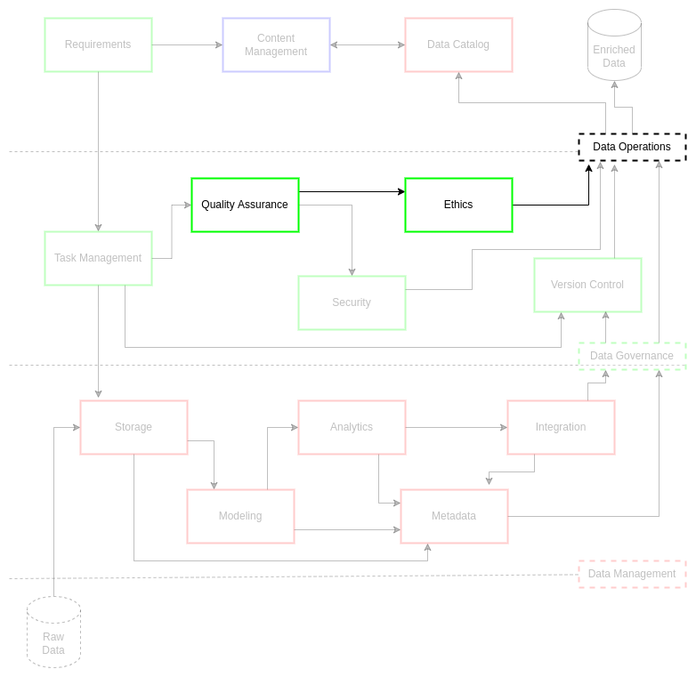

Ethics
Contents
Ethics¶
Ethics in research have undergone drastic changes in the 20th century and continue to improve in the 21st. These changes, which persistently evolve through legislative and institutional policy, have direct implications on data acquisition and data processing practices. As a result, any institution conducting scientific research must observe all applicable ethical doctrines for their research domains. There are several events that drove the development of national and international research ethics. These ethics have also been adopted and used within industry to the best of their abilities.
From 1932 to 1972, the US Public Health Service and Centers for Disease Control conducted an unethical study on more than 400 African-American men to examine the effects of long-term, untreated syphilis (e.g., the Tuskegee Syphilis Study)1. As a result, more than a hundred participants died and almost all suffered long-term effects from the research. This egregious violation in research ethics lead to the Belmont Report, the establishment of the Office for Human Research Protections, and several federal laws that continue to be updated to reflect modern research data practices.
This research failure and others like it around the world (e.g., Nuremburg Code and the Declaration of Helsinki following World War 2 human rights violations2) led to broad discussions on study participant rights and public trust. By violating participant rights to consent through deception and obfuscation, researchers erode the trust of ethical researchers and the quality and validity of their research results. Ergo, leading research institutions established internal review boards3 (IRBs) top ensure compliant research practices that can be rapidly shared and cross-validated without the immediate worry of ethical violations by the researchers.
There are currently several ethical considerations outlined for data management and data governance present in the DAMA guidelines4. These guidelines provide an excellent baseline for ethical data use and research.
Reduce impact on people
Reduce potential misuse of data
Maximize economic value of ethical data handling
These guidelines pursue ethical practices that ultimately reduce misunderstanding, misrepresentation, and misuse of data assets within data architectures. This reduction is guided by consistent and rigorous data governance which maintains living documents and practices that encourage ethical data practices. These practices must be persistent within a culture of ethical risk accountability. If institutions maintain a high-level of accountability, they stand to be more competitive, trusted, and relevant within their associated networks. This ultimately equates to much higher economic value in their data assets and the practices that support the generation and curation of data assets.
Data ethics drive several policy decisions around the world. The European GDPR standard5,6 passed on the premise that Internet providers would put consumer data privacy and control first. As a result, GDPR pushes companies such as Google and Apple to shift their user data practices toward more protective and mutually beneficial forms. In the US, several efforts attempted to push corporations and governments to implement ethical AI and data practices. One such effort was the Bloomberg-backed Data for Democracy ethics project7,8 which advanced a crowd-sourced approach to ethical data and model generation.
The US government advanced several recent efforts in the national and defense sectors to formalize standard data practices9,10. The national and defense data strategy documents cover several areas integral to data ethics.
Maintaining ethical use of data
Practicing ethical governance, conscious design, and a learning culture
Uphold ethical governance with responsible and transparent practices
Development and use of data ethics framework
The federal data strategy maintains it ethical framework as part of its data infrastructure. The US national defense strategy holds data ethics at the core of all its data operations planning. The federal and defense frameworks both indirectly adhere to DAMA standards, opting to minimize negative effects of negligent or malicious data handling practices.
Challenge¶
Innovation must be pursued within a clearly understood categorical imperative. Data operations should critically situate definition of this moral structure to enable stakeholders and their missions. As a result, an organization must persistently observe their obligations to evolve this imperative as environments and agents shift their ethical processes.
Do No Harm should be at the core of an institution’s mission and goals. The institution should enable mission effectiveness for community stakeholders in a way that minimizes the economic and structural impact on people. This reduction in effect is managed through balancing surgically-precise solutions with ethical guidance and policy that are sustainable and adaptable.
Specific to data operations, it must manage data ethically within its communities and between its stakeholders. This data management principle mandates compliance with guidelines on data asset and data architecture utilization in a manner that adds additional credibility to an institution’s systems and results. Ethics supplements analytic and scientific product credibility through transparent adherence to practices that bolsters an institution’s reputation.
Goals¶
Observe and enforce responsible ownership and stewardship of data assets in alignment with institutional and stakeholder policy, guidance, and agreement
Enable transparency in defining and executing ethical requirements for constructive customer outcomes
Implementation¶

ciutshi suggests leveraging existing ethics guidelines with industry and data asset provider standards for the ethical handling and storage of data products and services. Content management systems (CMS) must be referenced for appropriate protective practices per those systems’ data processing policies.
Much of the following sections will be similar to topics covered in the security documentation as these topics are deeply connected. Ensure that care is taken in reviewing all associated documentation prior to acquiring data assets that may violate security and ethics guidelines for your project and its stakeholders.
Acquisition and Ingest¶
Prior to purchase or transfer of data assets for ownership or stewardship, data management personnel should ensure that said assets are not opening the institution to any unnecessary risk. Questions should be asked regarding the source of the data, collection methods, and other typical metadata information that may prove useful for later analysis and deprecation practices.
Lack of purview and insight on data origins may prove catastrophic for research outcomes. A large part of ethical practices is sustaining credibility within communities of practice as well as with industry, academic, and government leaders. Using low-quality or erroneous data assets may have a significant negative impact on institutional credibility and the strategic viability of the institution as a research leader.
If a data asset is found to violate or potentially violate ethics guidelines, immediate action should be taken to remediate the issue. Data purchases or transfers should be halted by data management and/or data architecture personnel while the ethical risk is assessed. Any data assets existing on IT systems should be frozen pending removal. The exception to this removal process is the metadata and catalog entries: metadata should be updated with the ethical issues while the master data sample should be removed from the catalog (scrubbing metadata as needed to removed any protected personal information indicators). ETL documentation and code should be maintained as well in case the ethical issue is resolved (also observing the scrubbing of any protected information).
Storage¶
Storage of data assets should be aligned with leading industry and academic standards for data protection. The primary function of this is protection of personal information and other data associations. At a minimum, data management and data architecture personnel should agree on the security level of the storage location and the protection measures to be applied to the data for access and handling. This includes topics such as encryption, API policy, user group policy, and third-party vendor access to data architectures and systems.
Institutions must observe hybrid practices based on its cloud and bare-metal systems. Many of the details required to assess ethical storage and protection measures will be obtained through the requirements process prior to bringing the data asset into data systems. Determinations will then be made on who should steward the data into the appropriate systems, ultimately determining who will access and utilize the mastered data asset.
Processing and Distribution¶
The data management team will work with the data architecture team and data stewards to carefully consider access to the data assets. This consideration includes documenting the purpose of usage and the projects that will be using this data for the defined project timeline. This may determine who accesses data systems to process and deliver the data asset beyond the project scope and originally defined customer.
Due to hybrid compute environments, topics such as data literacy and model coherence must be part of the data outcomes from the data management team (in collaboration with the requisite ethical data practices representatives). Assisting the customer in understanding the technical implementations’ effects on the output is critical to how customers and stakeholders utilize these outputs. This consideration has sizeable implications for projects and data operations as it is a benchmark for validity and credibility of the systems and practices in place for ethical data asset distribution.
Monitoring and Deprecation¶
Monitoring the output of data systems after fulfilling project requirements is as critical as when first bringing data assets into data management workflows. Care should be taken to adhere to data endpoint timelines as defined in the requirements process: shutting down unused asset APIs and data lakes unless additional requirements are issued to the data management team. Careful observation of metrics and access logs must be leveraged to determine illicit or unintended access or utilization of these assets. This approach ensures that institutions observe ethical data handling practices as outlined by institutional policy and license agreements between leadership and the data providers.
Deprecation must also be carefully handled to maintain an appropriate balance between legacy and ethical security. Prior to deprecation or deletion of data assets, ensure that metadata, catalogs, and other documentation are updated to reflect the final implementation of the data asset requirements: tagging ethical topics and levels where necessary. If no additional requirements are issued, the data asset is shutdown and placed in iceberg for no more than one year. If the data asset is not accessed in that year, it should be considered for deletion from data architecture-controlled systems (keeping in mind that the raw data is the only data corpus that should exist on these systems for long-term holding beyond requirement-defined implementations and that the essential elements of information for the mastering of the data is stored in the metadata which is housed in the data catalog).
References¶
Number |
Reference |
|---|---|
1 |
CDC (2021, April 22). Tuskegee study and health benefit program - CDC - NCHHSTP., Cdc.Gov. https://www.cdc.gov/tuskegee/ |
2 |
Wikipedia contributors. (2021, December 12). Declaration of Helsinki, https://en.wikipedia.org/w/index.php?title=Declaration_of_Helsinki&oldid=1059877888 |
3 |
Wikipedia contributors. (2021a, October 9). Institutional review board. https://en.wikipedia.org/w/index.php?title=Institutional_review_board&oldid=1049043275 |
4 |
Henderson. D., Earley, S., Sebastian-Coleman, L., Sykora, E., Smith, E. (Eds.). (2017). DAMA-DMBOK: Data management body of knowledge (2nd Ed.). Basking Ridge, NJ: Technics Publications. |
5 |
Atwal, H. (2020). Practical dataops: Delivering agile data science at scale. UK: Apress. |
6 |
Ladley, J. (2019). Data governance: How to design, deploy, and sustain an effective data governance program (2nd ed.). San Diego, CA: Academic Press. |
7 |
Data for Democracy (2018). d4dcommunity.org. Retreived August 2, 2021, from https://d4dcommunity.org |
8 |
Bloomberg (2018, March 23). It’s time for data ethics conversations at your dinner table. Tech at Bloomberg. https://www.techatbloomberg.com/blog/time-data-ethics-conversations-dinner-table/ |
9 |
Federal Data Strategy. (2020). Data.Gov. Retrieved August 2, 2021, from https://strategy.data.gov/ |
10 |
DoD Data Strategy (2020). Defense.Gov. Retrieved August 2, 2021, from https://media.defense.gov/2020/Oct/08/2002514180/-1/-1/0/DOD-DATA-STRATEGY.PDF |